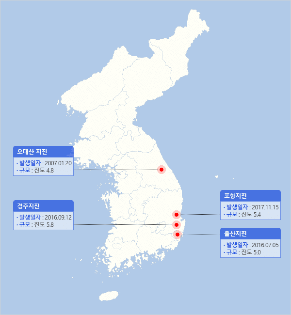
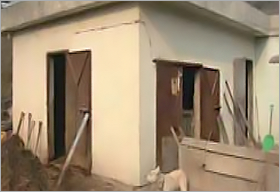

부산 지진 피해 집계 및 AI 위험성 분석 시스템
국내 지진피해 사례
국내 주요 지진

-
오대산 대지진
- 발생시각
- 2007. 1. 20. 20:56
- 위치
- 산리쿠 해역
(북위 38.1도, 동경 142.9도, 오시카반도의 동남동 130㎞부근) - 규모
- M 9.1
- 깊이
- 24㎞
- 최대진도
- Ⅵ
-
주요 피해사례
- 인명피해
- 사망 19,533명, 실종 2,585
- 재산피해
- 전파 121,768채, 반파 280,160채, 일부 파손 744,396채
- 기타피해
- 지진해일로 인한 전원공급 중지로 후쿠시마현의 원자력발전소에서 방사능 누출 사고 발생
-

[지진해일 발생]
출처: 행정안전부,2018,2017 포항지진 백서, p.456 -

[지진해일 발생]
출처: 행정안전부,2018,2017 포항지진 백서, p.456
-
관련자료

Copyright ⓒ All Rights Reserved.